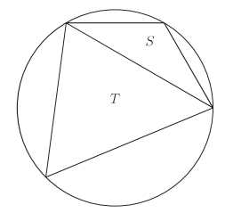

Theory · Problems · TMUA · STEP
Advanced Mathematics for High School
The complete first volume of Preparing for Oxbridge, published free online: all the theory you need for the TMUA, together with hundreds of problems drawn from the TMUA, STEP, Olympiads, past admissions papers and original questions — organised by topic, exactly as the TMUA syllabus is.
§1.1About admission tests
What are admission tests? How do I prepare for them? Which admission tests should I take? These are questions that all students have when they are applying for university.
An admission test is a test that you need to take in order to be accepted at university. Based on the score from the admission test, a university may decide whether to call a candidate for an interview or not. Most of the time, when universities have admission tests, the tests are much more important than the personal statement. Thus, preparing for the admission test is of utmost importance, and shouldn't be neglected.
In the case of STEM tests, most have one of three formats: multiple choice, problem-based, or a combination. Usually, the problems are from different areas of Mathematics, coupled with some problems from other relevant topics (such as Mechanics and Statistics in STEP). Most admission tests last between 2 and 3 hours.
The most important aspect of Mathematics admission tests is to solve problems. During my first year at Imperial, my Real Analysis professor Richard Thomas used to say that "Mathematics isn't a spectator sport". A student can't turn up to the admission test without having prepared thoroughly, expecting to get admitted into Oxbridge or Russell Group universities. Usually, the student who gets accepted is the one that has developed enough intuition and experience in Mathematics that they can solve the problems in the fastest way possible under exam conditions. Remember, genius is 1% inspiration and 99% perspiration.
§1.2How to use this site
This site is meant to teach both problem-solving strategies and tips on how to solve the exam in the fastest way. Each topic page contains all the theory you need for the admission tests in that area, templates that organise commonly-used techniques step by step (in my experience as a tutor, the worst mistake a student can make is being disorganised), and a set of problems selected from diverse sources — admission tests, Olympiads, and original questions.
While working with students, I have seen that most of them are very good at Mathematics, but require small pushes in specific areas. A key ingredient in preparing is to not avoid the subjects you feel are harder: if you feel that Geometry problems are hard, focus especially on Geometry problems until they are no longer hard. The theory here often favours intuition over full rigour — when students miss the intuition of a theorem, they are less likely to apply it well, so we base understanding on intuition and then invite you to prove the theorem rigorously yourself.
The topic menu mirrors the TMUA syllabus. Work through it in order, or use the initial aptitude test below to find your weakest area and jump straight there.
§1.3The tests
The Test of Mathematics for University Admission (TMUA)
The TMUA is now the mathematics admissions test: it is used by Cambridge, Oxford, Imperial, LSE, Durham, Warwick and others (depending on the course and year), with a single sitting covering all of your applications. It consists of 2 papers, each with 20 multiple-choice questions: Paper 1 tests applications of mathematical knowledge, while Paper 2 tests mathematical reasoning — logic, proof, and identifying errors in arguments. With under two minutes per question, the winning strategy is accuracy at speed: prioritise the questions you can do cleanly, flag and return to the rest, and leave your slowest question type (for most students, Geometry) for last — in the time you would spend on it, you can often solve two others.
The Sixth Term Examination Paper (STEP)
STEP is the admission test that Cambridge, Warwick, Imperial College and some other universities may ask for. It takes place in summer, so its syllabus is larger — everything up to Further Mathematics, Mechanics and Statistics — and it is widely considered the hardest of the admissions tests. Each paper consists of 12 problems (8 pure, 2 mechanics, 2 statistics) of which you choose 6 to solve in 3 hours. Use the freedom to specialise to your advantage: the first question usually works as an "icebreaker", and the Statistics and Mechanics questions are the least popular, so knowing them well gives you leverage — which is exactly why this site includes dedicated Mechanics and Statistics topics.
A word on the MAT
This book was originally written when Oxford's Mathematics Admissions Test (MAT) was still running. The MAT has since been discontinued — it ran from 2007 to 2025, and from 2026 Oxford uses the TMUA instead. Its past papers, however, remain some of the finest practice material in existence, particularly for the TMUA's multiple-choice format, which is why MAT problems appear as sources throughout this site.
Topics
Numbers & Proof Foundations
Peano axioms, induction, divisibility, modular arithmetic, infinite descent.
Topic 2Algebra and Functions
Quadratics, polynomials, the Binomial Theorem, systems of equations, inequalities.
Topic 3Sequences and Series
Arithmetic and geometric progressions, recurrences, convergence and periodicity.
Topic 4Graphs, Exponentials & Logs
Limits, asymptotes, curve sketching, transformations, logarithm laws, functional equations.
Topic 5 · NewGeometry and Trigonometry
Lines, circles and triangles in the plane, trigonometry — and 3D: vectors, spheres, solids.
Topic 6Differentiation
Derivatives from first principles, rules, L'Hôpital, Newton–Raphson, Maclaurin series, differential equations.
Topic 7 · CompletedIntegration
Indefinite and definite integrals, the Fundamental Theorem, areas, the trapezium rule, solids of revolution.
Topic 8 · NewCounting & Probability
The underpinning knowledge the TMUA assumes: arrangements, selections, probability, data.
Topic 9 · NewLogic and Proof (Paper 2)
Statements, negation, converse and contrapositive, necessary & sufficient, proof and its errors.
ExtensionComplex Numbers
Beyond the TMUA: the complex plane, de Moivre, roots of unity, Argand loci and trigonometric sums — for STEP and interviews.
Extension · STEPMechanics
Kinematics, projectiles, forces, energy, momentum and restitution — the unpopular questions worth choosing.
Extension · STEPStatistics
Conditional probability and Bayes, random variables, expectation and variance, continuous distributions.
InteractivePractice Arena
Click a topic, get a random TMUA-style problem, commit to an answer, read the solution. Keeps your session score.
TMUA syllabus coverage map
The TMUA specification splits into Paper 1 (applications of mathematical knowledge) and Paper 2 (mathematical reasoning). Every part of the specification is covered here:
| TMUA specification | Where on this site |
|---|---|
| Algebra and functions | Topic 2 · Topic 4 |
| Sequences and series | Topic 3 |
| Coordinate geometry in the (x, y) plane | Topic 5 |
| Trigonometry | Topic 5 |
| Exponentials and logarithms | Topic 4 |
| Differentiation | Topic 6 |
| Integration | Topic 7 |
| Graphs of functions | Topic 4 |
| Number, counting, probability and statistics (underpinning knowledge) | Topic 1 · Topic 8 |
| Paper 2: the logic of arguments | Topic 9 |
| Paper 2: mathematical proof & identifying errors | Topic 9 · Topic 1 |
| Beyond the TMUA (STEP / MAT / interviews) | Complex Numbers · 3D Geometry · Mechanics · Statistics |
§1.6Initial Aptitude Test
As a starting point, here is a short test containing the main topics of the Mathematics admission tests. Solve it in one hour; it should suggest areas of improvement. Based on this test, jump to the topic involving the problem you found hardest. Alternatively, the topics are written progressively, so going through them in order is also a very sound strategy.
Let \(N\) be a positive integer. How many integers are between \(\sqrt{N^2+N+1}\) and \(\sqrt{9N^2+N+1}\)?
Show solution
We compare the two quantities with natural numbers. We see that \(N=\sqrt{N^2}\le \sqrt{N^2+N+1}\le\sqrt{N^2+2N+1}=N+1\), and similarly \(3N\le\sqrt{9N^2+N+1}\le 3N+1\). Thus the integers between the two square roots are those between \(N+1\) and \(3N\), and there are \(2N\) such numbers.
A circle of radius 2, centred on the origin, is drawn on a grid of points with integer coordinates. Let \(n\) be the number of grid points that lie within or on the circle. What is the smallest amount the radius needs to increase by for there to be \(2n-5\) grid points within or on the circle?
Show solution
The points inside or on the circle are \((0,0)\), \((\pm1,\pm1)\), \((\pm1,0)\), \((0,\pm1)\), \((\pm2,0)\), \((0,\pm2)\), so \(n=13\) and \(2n-5=21\): we want to include 8 more points. The closest excluded points are \((\pm2,\pm1)\) and \((\pm1,\pm2)\) — exactly 8 of them, at distance \(\sqrt5\) from the origin. So we expand the radius by \(\sqrt5-2\).
Two triangles are inscribed in a circle, as shown in the diagram below. The triangles have respective areas \(s\) and \(t\), and \(S\) is the smaller triangle, so that \(s<t\). What is the smallest value that \(\dfrac{4s^2+t^2}{5st}\) can equal?

Show solution
Consider \(x=\frac st\). The expression becomes \(f(x)=\frac{4x}{5}+\frac{1}{5x}\). Then \(f'(x)=\frac45-\frac1{5x^2}\), which vanishes at \(x=\frac12\) (taking the value in \((0,1)\)). Substituting, the smallest value is \(f\!\left(\frac12\right)=\frac45\). (Can you redo this with AM–GM? See the Algebra problems.)
Find all functions \(f:\mathbb R\to\mathbb R\) that satisfy the equation \(f(x)+(1-x)f(-x)=x^2\).
Show solution
Changing \(x\) to \(-x\) gives the symmetric pair \[f(x)+(1-x)f(-x)=x^2,\qquad f(-x)+(1+x)f(x)=x^2.\] Multiplying the second by \((1-x)\) and subtracting gives \(-x^2f(x)=-x^3\), so \(f(x)=x\) is the only solution — and this applies for every \(x\), since no conditions were imposed when we changed variables.
The numbers \(l, m, n\) are positive integers such that \(l\ge m\ge n\) and \(l^{-1}+m^{-1}+n^{-1}=1\). Prove that \(n\le 3\) and \(m\le 4\), and hence find all possibilities for \(l, m, n\).
Show solution
If \(n>3\), then from \(l\ge m\ge n>3\) we get \(l^{-1}+m^{-1}+n^{-1}<3\cdot\frac13=1\), a contradiction, so \(n\le 3\). Since \(n\ne 1\), take cases. \(n=2\) gives \(l^{-1}+m^{-1}=\frac12\); the same logic gives \(m\le4\), and checking \(2\le m\le4\) gives \(m=3,l=6\) or \(m=l=4\). \(n=3\) gives \(l^{-1}+m^{-1}=\frac23\), forcing \(m\le3\) and the only solution \(l=m=n=3\).
A plane contains \(n\) distinct given lines, no two of which are parallel, and no three of which intersect at a point. By first considering the cases \(n = 1, 2, 3, 4\), provide and justify, by induction or otherwise, a formula for the number of line segments (including the infinite segments). Prove also that the plane is divided into \(\frac12(n^2+n+2)\) regions (including those extending to infinity).
Show solution
With two lines we have 4 segments; adding a third gives 9. We conjecture \(n^2\) segments and prove it by induction: a new line meets the previous \(n\) lines in \(n\) points, giving \(n+1\) new segments on itself, and creates one new segment on each pre-existing line — \(2n+1\) new segments in total, so \(n^2+2n+1=(n+1)^2\). For regions: each of the \(n+1\) segments of the new line splits a region in two, adding \(n+1\) regions; an analogous induction gives \(\frac12(n^2+n+2)\). A fully rigorous version of this induction is worked through on the Numbers page.